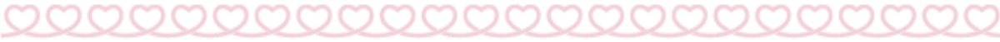
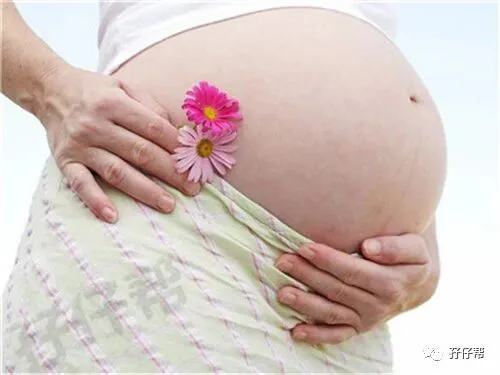
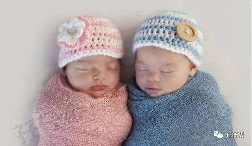

不少人都曾听过「怀孕前3个月内不可以告诉他人」，就连很多大明星也是这样的，总是神神秘秘地藏着掖着，满三个月之后才公开喜讯。
比如，谢楠晒肚宣布二胎的时候，都过去196天了。还有徐熙娣大S，林心如，谢娜等.
我们广东的风俗也“不落俗套”，也是满3个月之后才能对外公布。
据说是怕里面的胎宝宝太娇气，这些说法实在让人哭笑不得。
但孕早期确实是个非常危险的时期，像我们这些双胎妈妈，只要确诊双胎就会被产科医生列入“高危产妇”的名单，双胎妊娠的孕妈咪在早孕期更加得格外小心了。
今天圆圈妈想跟各位双胎妈咪说说双胎妊娠早孕期的注意事项，希望我的经验可以帮到你哦！
1
饮食，应清淡易消化
几乎每一位孕妈咪的早孕期都要经历这一层劫难--孕吐！程度可轻可重。而双胎的我早孕反应尤其剧烈。
别说吃了，只是闻到楼下餐馆飘来的油烟味就已经作呕到面红脖子粗，每天早晨刷牙都要吐一堆黄疸水出来。
这种情况整整持续到孕周的第四个月才慢慢消停。
在这样的情况下，饮食显得可有可无了。但为了两个胎宝宝的发育还是多少得吃点的。
选早晨最饿那会儿，专挑有营养，清淡，易消化的食物吃。没啥胃口的时候，可以喝孕妇奶粉或者吃点全麦面包和水果。
人参、桂圆、薏仁等容易促进血液循环的食材建议不吃，容易滑胎。
习惯喝碳酸饮料奶茶咖啡的宝妈也要注意忌口了，这些东西会影响睡眠品质，对胎宝宝的发育百害而无一益！
2
药物，能免则免
孕早期是胎宝宝各器官发育的最重要时期，相信各位孕妈都知道这个时候是严禁一切药物的。如果孕妈咪在此刻服用了药品，很容易导致胎儿畸形。
所以双胎的孕妈咪，如果你们在不得不吃药的情况下，如重感冒或者皮外伤等，请一定找医生，告诉医生“我是双胞胎孕妇”并请医生给的药物必须是对胎儿生长发育无碍的药物。
值得庆幸的是，我孕早期除了吐得厉害，没有感冒。除了备孕期，吃了6个多月的叶酸还有吃了半个月的黄体酮，其他药品都没有接触！
值得一提的是，孖仔帮微信交流群里经常有宝妈咨询孕早期是否需要开始补钙补铁补维生素等。
我在孖仔帮的一期推文中也有提到，可以参考下。《双胞胎与孕期微量元素—对你爱爱爱不完》
另外，不管孕期吃什么保健品都应当在医生的指导下进行！
3
居住环境，很重要
怀着圆圈的时候，我和圆圈爸正蜗居在深圳某城中村一个20来平米的小单间里。楼下就是菜市场和小餐馆。
每天早晨唤醒我的不是梦想而是各种油烟呛味，过道走廊不通风总是烟雾萦绕久久不能散去。
办公室也不太平，正好隔壁公司在装修，各种刺鼻的装修味道扑面而来。
整个早孕期，我都泡在这种水深火热的环境下煎熬着，所幸，圆圈的胚芽底子不错，NT和大排畸都没发现问题，生出来的时候评分10分！
因此有条件的宝妈一定要注意居室的安静干净，除了自身不抽烟喝酒之外，也尽量避免去卫生不好，空气不好的地方，尽可能地远离有害气体和病毒影响胎宝宝的生长发育。
4
性生活，适可而止哦
因为双胎的缘故，圆圈爸做了一个伟大的决定。禁房事10个月！
我想应该没有哪个人会比宝爸更希望自己的媳妇早日卸货的了！哈哈！
因为，你瞧瞧吧！
孕早期吐得厉害，没心情
孕中期各种烦躁，没心情
孕晚期肚子巨大，没心情
可能其他宝爸做不到“10个月禁”的承诺，但早孕期请一定要忍住。
孕早期的胎宝宝还在里面生根发芽，根基还没建稳，非常脆弱，千万不要因为一时的“忍不住”而留下遗憾。
5
工作，量力而行
双胎妈妈不必因为肚子里有俩就刻意辞去工作，如果早孕期没有什么不适，如流血腹疼等先兆流产的症状，可以结合自身实际情况，决定是辞职还是继续上班。
不管怎样，都请孕妈咪量力而行，万不可逞能哦！
我当时因为有先兆流产的迹象，被医生叮嘱要卧床安胎，只好跟公司请了两个星期的假期。
但实际我卧床三天就已经呆不住了，我没有流血没有肚子疼，干嘛搞得跟瘫痪似的。
熬了一周，我又灰溜溜地跑回去上班了。只是跟公司申请了下可以晚点上班，早点下班！
6
运动，适度即可
在怀孕的早期不宜做一些剧烈的运动，孕妈咪可以在早晚去周边散散步，但是不要时间太长，要保证身体不要出现疲劳，适度就好，保证充足的睡眠。
至于孕早期该如何适当的运动，我觉得还是要结合个体情况，像我除了吃不得气不得，其他都没关系的。
即使得知自己是双胎妊娠且有先兆流产的迹象，我依然没有办法让自己像没手没脚那样整日整夜躺床上。
嗯，我还兴致盎然骑单车去上班，最后被圆圈爸阻止。
只要不是剧烈运动，孕早期的双胎妈妈，可以适当走动的，哪怕胎盘检查出低置状态，也不是你要绝对卧床的理由！（为什么孕早期胎盘低不用卧床，后期孖仔帮推文，我会着重写下原因）
早晨去楼下呼吸下新鲜空气，晚上跟宝爸出去散散步，只要身体允许，不疲劳，适度运动应当是被鼓励的！
7
好心情，比什么都重要
几乎孕早期的所有妈咪，不管单胎还是双胎，就像深圳七八月份的天气一样，说晴天就阳光灿烂，说霹雳就打雷下雨。
刚刚还摸着肚子一脸幸福，下一秒就哭的凄凄惨惨戚戚。
嗯，我也不例外！
孕12周之后确定是单绒双羊，我就陷入万劫不复的恐惧当中，整天泡在网上查双胎输血综合征和胎儿生长受限的相关资料。把自己搞得跟祥林搜似的，整天碎碎念地嚷嚷。
希望宝妈不要学我哈！我现在想想都觉得自己好无聊。呵呵！
怀孕以后由于身体和心理的原因，孕妈咪发脾气烦躁，甚至忧心忡忡担心胎宝宝长不好，这些都无可厚非。
但注意调整状态，为了胎宝宝的健康发育，孕妈咪可以在保证自身和胎宝宝安全的情况下，去做自己想做的事情，多想一些高兴的事情，尽量让心情放松，避免不必要的多愁善感和疑神疑鬼！
本文转载自孖仔帮，专注双胞胎育儿经验分享，著作权归孖仔帮所有。
END
以上是圆圈妈在早孕期的几个大方面的经验分享。
还有其他疑问吗？可以关注孖仔帮，加入我们的双胎妈妈专属孕期交流群哦。


